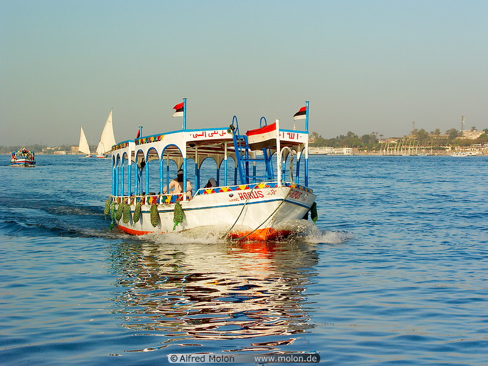
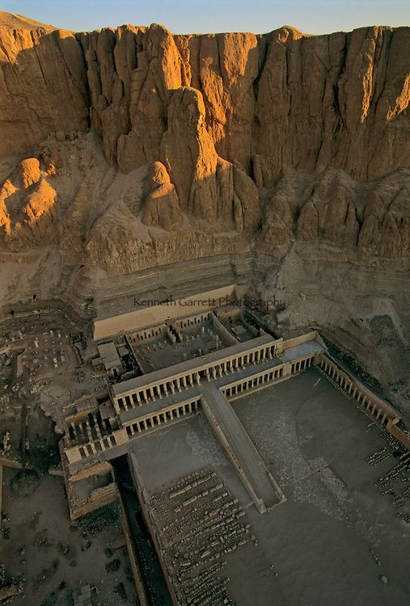
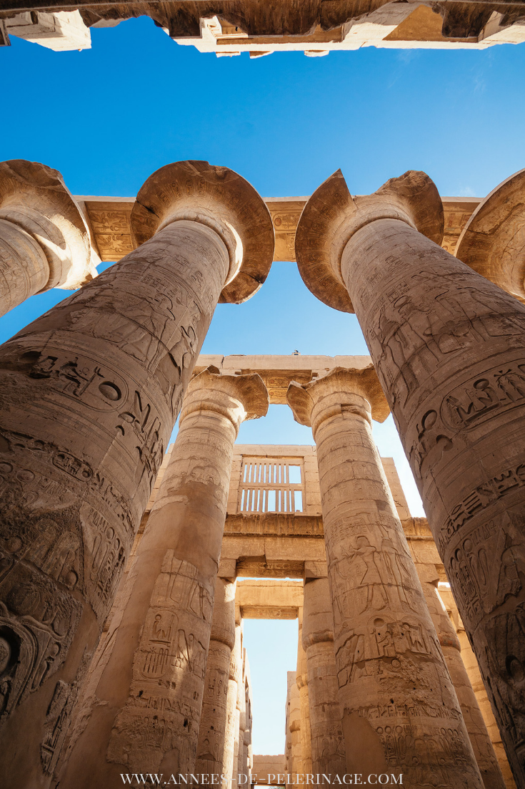

Luxor (/ˈlʌksɔːr, ˈlʊk-/;[1] Arabic: الأقصر l-aqṣur Egyptian Arabic pronunciation: [ˈloʔsˤoɾ], Upper Egyptian pronunciation: [ˈloɡsˤor]; Sahidic Coptic: ⲡⲁⲡⲉ Pape,[2] pronounced [ˈpapə]) is a city in Upper (southern) Egypt and the capital of Luxor Governorate. The population numbers 506,535 (2012 estimate),[3] with an area of approximately 417 square kilometres (161 sq mi).[4] The modern city sprawls to the site of the Ancient Egyptian city of Waset, also known as Nut (Coptic: ⲛⲏ)[5] and to the Greeks as Thebes or Diospolis, Luxor has frequently been characterized as the "world's greatest open-air museum", as the ruins of the temple complexes at Karnak and Luxor stand within the modern city. Immediately opposite, across the River Nile, lie the monuments, temples and tombs of the west bank Necropolis, which includes the Valley of the Kings and Valley of the Queens. Thousands of tourists from all around the world arrive annually to visit these monuments, contributing greatly to the economy of the modern city.
The most famed collection of such elaborate tombs—the Valley of the Kings—lies on the Nile's west bank near Luxor. During Egypt's New Kingdom (1539-1075 B.C.), the valley became a royal burial ground for pharaohs such as Tutankhamun, Seti I, and Ramses II, as well as queens, high priests, and other elites of the 18th, 19th, and 20th dynasties. The tombs evidence elaborate preparations for the next world, in which humans were promised continuing life and pharaohs were expected to become one with the gods. Mummification was used to preserve the body so that the deceased's eternal soul would be able to reanimate it in the afterlife.
Karnak is the modern-day name for the ancient site of the Temple of Amun at Thebes, Egypt. The Egyptians called the site Nesut-Towi, "Throne of the Two Lands", Ipet-Iset, "The Finest of Seats" as well as Ipt-Swt, "Selected Spot" (also given as Ipetsut, "The Most Select of Places"). The original name has to do with the ancient Egyptian belief that Thebes was the first city founded on the primordial mound which rose from the waters of chaos at the beginning of the world. At that time, the creator-god Atum (sometimes Ptah) stood on the mound to begin the work of creation. The site of the temple was thought to be this original ground and the temple was raised at this spot for that reason. Karnak is believed to have been an ancient observatory as well as a place of worship where the god Amun would interact directly with the people of earth.
